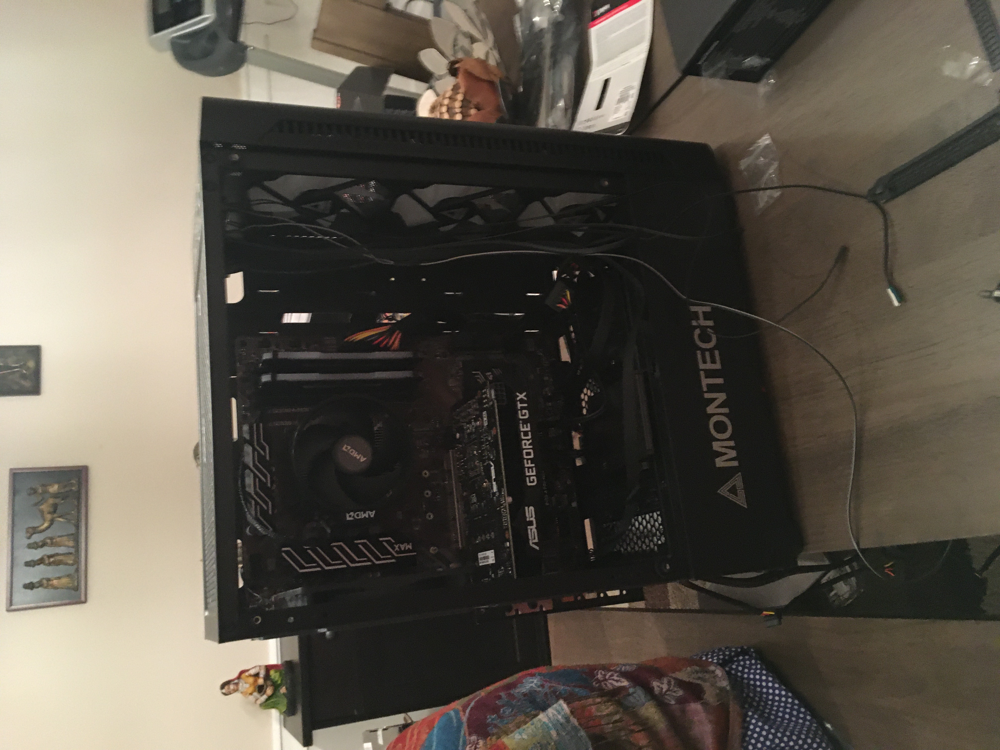
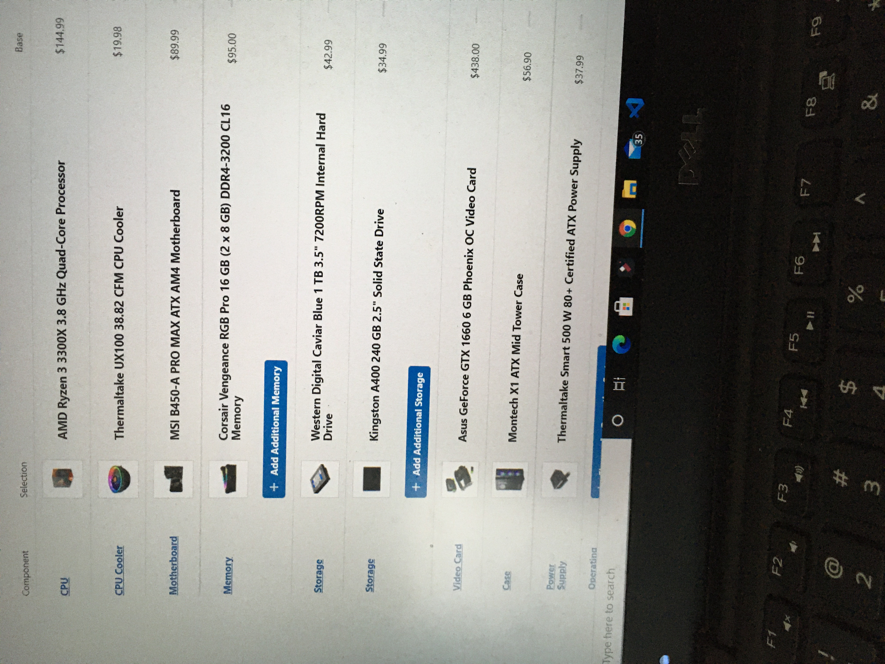
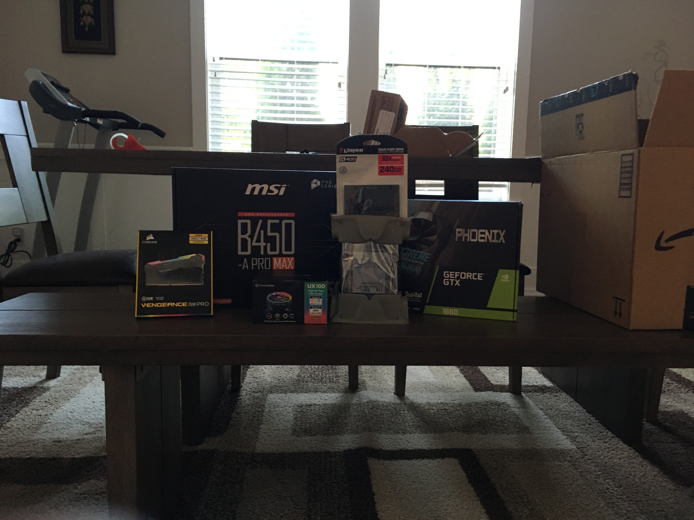
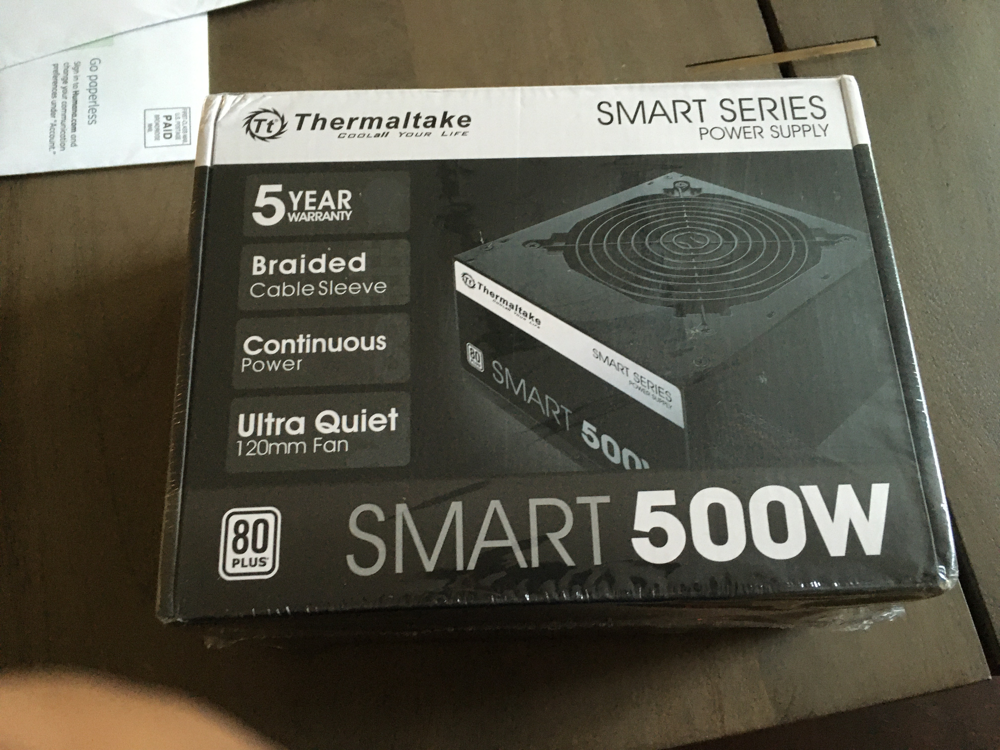

The problem/motivation
At 13, I wanted a gaming PC that could deliver strong performance while staying within a budget of approximately $1,300. Rather than buying a prebuilt computer, I decided to research the components and build one myself.
Since it was my first PC build, I had to understand both the performance of individual components and whether the CPU, GPU, motherboard, memory, storage, power supply, and case would work together as a complete system.
How it works
Before purchasing anything, I researched component compatibility, pricing, expected gaming performance, and the role each part played within the computer. I compared CPUs and GPUs, checked compatibility between components, and researched estimated FPS at different resolutions to evaluate potential configurations.
After selecting the parts, I assembled the system inside a Montech case, installing and connecting the processor, graphics card, storage, motherboard, power connections, and supporting hardware.
The project was my first hands-on experience working with computer hardware and taught me how individual components interact as part of a complete system.
Process
I started by establishing a budget of roughly $1,300 and researching what level of gaming performance I could achieve within it. I compared components based on price and performance while checking that each selection was compatible with the rest of the system.
I also researched expected FPS and benchmark results to estimate gaming performance before spending the money. Once I finalized the configuration, I purchased the components, assembled the computer, connected the hardware, and completed the setup needed to get the system running.
Results
The result was my first fully assembled custom gaming PC, completed at age 13 within roughly the budget I had established.
More importantly, the project gave me an early foundation in computer hardware. I learned how CPUs, GPUs, storage, motherboards, power systems, and other components depend on one another and how careful research and compatibility checking can prevent problems during a build.
What I'd do differently
Looking back, I would evaluate potential components using a broader range of factors beyond estimated FPS. At the time, gaming performance was my main priority when comparing configurations.
Today, I would place greater emphasis on upgradeability, power requirements, cooling, component balance, and long-term value, while using real-world benchmarks across multiple applications rather than relying heavily on predicted gaming performance.
Gallery


